Technical Documents · ISL TD2027DL
Edition v1.0, 2027 (version 1.0) · effective 1 January 2027 · current
Retrieved on 26 November 2026 from https://www.wada-ama.org/sites/default/files/2026-03/td2027dl_v1.0_eng.pdf
Editions: v1.0, 2027 (current) · v1.0, 2022 · v1.0, 2021 · v2.0, 2019 · v1.0, 2019 · v1.0, 2018 · v2.0, 2017 · v1.0, 2017 · v1.0, 2014 · v2.0, 2013 · v1.0, 2012 · v1.0, 2010
p. 1
DECISION LIMITS FOR THE CONFIRMATORY QUANTIFICATION OF EXOGENOUS THRESHOLD SUBSTANCES
1.0 Introduction
This Technical Document (TD), which constitutes an integral part of the International Standard for Laboratories (ISL[1]), has been established to harmonize the reporting of results for exogenous Threshold Substances analyzed in urine Samples (as listed in Table 1), with particular regard to the Decision Limits (DLs) that shall be applied to determine whether the confirmed quantitative analytical result shall be reported as an Adverse Analytical Finding (AAF).
[Comment to Article 1.0: DLs for endogenous Threshold Substances [e.g., human Chorionic Gonadotropin (hCG); human Growth Hormone (hGH), are defined in specific ISL TDs[2, 3]]
This ISL TD provides requirements for the following:
a) Analytes of exogenous Threshold Substances targeted in confirmatory Quantitative Procedures (see Article 2.0).
b) applicable Thresholds (T) and DLs (see Table 1).
c) Maximum allowed values of Measurement Uncertainty (MU) - see Table 1.
d) Adjustment of the DL for the urinary Specific Gravity (SG) - (see Article 7.0).
e) Reporting of quantitative results - (see Article 8.0).
Further guidance is provided in Annex A, including:
f) Estimation of MU.
g) Verification of MU by a Laboratory.
p. 2
Table 1. Exogenous Threshold Substances and Applicable Thresholds, Decision Limits, Maximum Allowed Measurement Uncertainties and Target Analytes
| Substance Class | Threshold Substance | Threshold | uc_Max (%)ᵃ | Decision Limitᵇ | Target Analyte(s) |
|---|---|---|---|---|---|
| S2.1.2. Hypoxia-Inducible Factor Activating Agents | Cobalt | 60.0 ng/mL | 20 | 80.0 ng/mL | Inorganic Cobalt (Co²⁺ ) |
| S3. Beta-2 Agonists | Formoterol | 40.0 ng/mL | 15 | 50.0 ng/mL | Total content of formoterol, including: · Free (non-conjugated) form of formoterol AND · Its glucuronidated phase-II Metabolite, expressed as formoterol equivalent |
| S3. Beta-2 Agonists | Salbutamol | 1.00 µg/mL | 10 | 1.20 µg/mL | Total content of salbutamol, including: · Free (non-conjugated) form of salbutamol AND · Its glucuronidated phase-II Metabolite, expressed as salbutamol equivalent |
| S6b. Specified Stimulants | Cathineᶜ | 5.00 µg/mL | 10 | 6.00 µg/mL | Total content of the free (non-conjugated) form of the target substance, including both levo- (l-) and dextro- (d-) enantiomers. |
| S6b. Specified Stimulants | Ephedrine | 10.0 µg/mL | 5.0 | 11.0 µg/mL | Total content of the free (non-conjugated) form of the target substance, including both levo- (l-) and dextro- (d-) enantiomers. |
| S6b. Specified Stimulants | Methylephedrine | 10.0 µg/mL | 5.0 | 11.0 µg/mL | Total content of the free (non-conjugated) form of the target substance, including both levo- (l-) and dextro- (d-) enantiomers. |
| S6b. Specified Stimulants | Pseudoephedrine | 150 µg/mL | 5.0 | 170 µg/mL | Total content of the free (non-conjugated) form of the target substance, including both levo- (l-) and dextro- (d-) enantiomers. |
| S7. Narcotics | Morphine (M) | 1.00 µg/mL | 15 | 1.30 µg/mL | Total content of Morphine, including: · Free (non-conjugated) form of Morphine AND · The phase-II M-3-glucuronidated Metabolite (M3G), expressed as M equivalent AND · The phase-II M-6-glucuronidated Metabolite (M6G), expressed as M equivalent |
p. 3
| Substance Class | Threshold Substance | Threshold | uc_Max (%)ᵃ | Decision Limitᵇ | Target Analyte(s) |
|---|---|---|---|---|---|
| S8. Cannabinoids | Tetrahydrocannabinol (THC) · Carboxy-THC (COOH-THC; 11-nor-Δ⁹ - tetrahydrocannabinol-9- carboxylic acid) | 150 ng/mL | 10 | 180 ng/mL | Total content of COOH-THC, including: · Free (non-conjugated) form of COOH-THC AND · Its glucuronidated phase-II Metabolite, expressed as COOH-THC equivalent |
a. Maximum Allowed Relative Combined Standard Uncertainty (at levels close to the Threshold).
b. The DL, expressed to three (3) significant figures, is obtained after adding a guard band g to the T, which accounts for the corresponding uc _Max and ensures that any value above the DL obtained with the Quantitative Procedure is higher than (>) the T with a statistical confidence of at least 95% (see Article 5.0).
c. Phenylpropanolamine (also know as norephedrine) is a diastereoisomer of cathine that is not prohibited and, therefore, shall be adequately chromatographically separated from cathine.
2.0 Confirmation Procedure for Exogenous Threshold Substances
2.1 "A" Sample Confirmation Procedure
As per the ISL[1], the "A" Confirmation Procedure (CP) for a Threshold Substance requires the application of:
a) A Quantitative Procedure to measure the property value (e.g., concentration) of relevant target Analyte(s) of the Threshold Substance (see Table 1), and
b) A Qualitative Procedure (where applicable) for the identification of the Analyte(s) of the Threshold Substance.
2.1.1 Quantitative Procedure
a) The quantitative Confirmation Procedure (CP) for a Threshold Substance shall be based on the determination of the mean of measured property values (e.g., concentrations) in three (3) "A" Sample Aliquots. If there is not enough Sample volume to analyze three (3) Aliquots, the maximum number of Aliquots that can be prepared should be analyzed.
[Comment to Article 2.1.1 a): The use of fewer than three (3) Aliquots due to insufficient Sample volume shall not invalidate the CP nor the resulting quantitative determination.]
b) The Laboratory shall demonstrate the Fitness-for-Purpose of the Quantitative Procedure Test Method validation, including the estimation of the MU (also refer to the ISL TD VAL[4]). Compliance with the criteria presented in Table 1 for uc_Max (%)
p. 4
ensures a harmonized reporting of AAFs at concentration levels exceeding the applicable DL.
c) The standard deviation of the replicate determinations shall be consistent with the combined standard uncertainty of the measurement uc(y). This consistency can be evaluated using The Standard Error of the Mean (SEM) of the replicate determinations using Eq. 1 below.
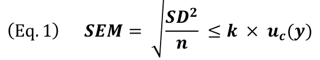
where:
SD: standard deviation of the replicate determinations n: number of replicates k: factor associated with the uncertainty of SD (for n = 3, k = 1; for n = 2, k = 1.4)
d) The Quantitative Procedure shall include the analysis, in the same analytical run and with the same number of replicates as the Sample, of appropriate QC sample(s) prepared in the matrix of analysis. The evaluation of the measured concentration(s) of the QC(s), for example, through the use of QC-charts (for frequently performed procedures. i.e., n ≥ 6 per year) or through comparison with the expected QC concentration value (for not frequently performed procedures)¹ may serve to determine if the Test Method is Fit-for-Purpose or if the results should be rejected and the analysis repeated.
2.1.2 Qualitative Procedure
When applying a chromatographic-mass spectrometric Qualitative Procedure, the target Analyte(s) shall be identified in compliance with the ISL TD IDCR[5] in one (1) of the three (3) Aliquots used for the quantification. The Limit of Identification (LOI) of the
¹The Laboratory shall verify whether the measured Analyte concentration in the positive QC sample (X̅, n ≥ 3) is compatible with the expected value (Xref).
a) If the absolute difference │X̅ -Xref│is less than or equal to (≤) the expanded uncertainty of that difference (U95%, k = 2), the Test Method is performing as expected.
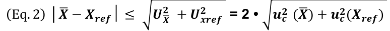
b) If the absolute difference │X̅ -Xref│exceeds (>) the expanded uncertainty of that difference, the Test Method performance is outside acceptable limits; therefore, the Sample results should be rejected and the analysis repeated.
p. 5
confirmatory Qualitative Procedure shall be not higher than (≤) the corresponding Threshold.
[Comment to Article 2.1.2: When multiple replicates of a QC sample are analyzed, the Laboratory's Management System should specify which replicate will be used for evaluating qualitative identification criteria (e.g., in conformity with the TD IDCR[12]).]
2.2 "B" Sample Confirmation Procedure
For the "B" CP of an exogenous Threshold Substance, only the Qualitative Procedure to confirm the presence of the relevant Analyte(s) of the Prohibited Substance reported in the "A" Sample is required for the AAF to be valid.
3.0 Target Analytes
3.1 Cobalt
a) The CP for cobalt shall be able to separate the inorganic (Co²⁺ ) and organic forms (vitamin B12, cobalamin) of cobalt, and shall target specifically the quantification (and identification, where applicable) of Co²⁺ for the reporting of an AAF. Suitable CPs could be based, for example, on:
i. Solid Phase Extraction (SPE) to remove organic cobalt followed by Inductively Coupled Plasma - Mass Spectrometry (ICP-MS).
ii. High Performance Liquid Chromatography (HPLC) combined with ICP-MS[7].
b) It is not necessary for the Initial Testing Procedure (ITP) to separate the inorganic and organic forms of cobalt (e.g., ICP-MS). However, the Laboratory shall establish, during the ITP validation, a concentration cut-off for total cobalt (inorganic + organic), which would trigger a CP for Co²⁺ .
[Comment to Article 3.1: The Analytical Testing Procedure (ATP) for the analysis of cobalt is not a mandatory ATP (see ISL TD ATP[8]) and, therefore, it is not applied to all urine Samples. A Laboratory with appropriate analytical capacity shall perform the analysis upon request by the responsible TA (or RMA, if different) or WADA.]
3.2 Cathine
a) In addition to targeting cathine, the CP for cathine shall ensure the adequate chromatographic resolution of cathine and its non-prohibited diastereoisomer phenylpropanolamine (also known as norephedrine).
b) The Laboratory shall report cathine as an AAF when found at a urinary concentration level greater than (>) the DL of 6 µg/mL. However, since cathine is a Metabolite of pseudoephedrine, if pseudoephedrine is also detected in the Sample, but at a concentration below (<) the DL of 170 µg/mL, a comment shall be made in the Test Report that the cathine finding may have p. 6 resulted from the administration of pseudoephedrine. In addition, the concentration of pseudoephedrine shall also be reported.
3.3 Morphine
Occasionally, a morphine (M) finding may result from the administration of a permitted substance such as codeine (C)[9,10] or ethylmorphine (EtM)[11-14]:
a) Where M is detected in a Sample together with C, the Laboratory shall report an AAF for M when both of the following conditions are met:
i. [M] > DL:
- The total M concentration level (free M + M3G + M6G, expressed as M equivalent) in urine is higher than (>) the DL or the adjusted DL (if SG > 1.018), and
ii. M/C ≥ 2.00, except if C > 5.00 µg/mL:
- The ratio M/C of total M (free M + M3G + M6G, expressed as M equivalent) to total C (free C + codeine-6-glucuronide (C6G), expressed as C equivalent) is equal to or higher than (≥) 2.00 (expressed truncated to three (3) significant figures), except when C > 5.00 µg/mL, which is indicative of only codeine intake. In this case, the quantification of M is not necessary, and the finding shall be reported as a Negative Finding.
[Comment to Article 3.3 a): The total concentration of C is expressed truncated to three (3) significant figures.]
b) Where M is detected in a Sample together with EtM, the Laboratory shall report an AAF for M when both of the following conditions are met:
i. [M] > DL:
- The total M concentration level (free M + M3G + M6G, expressed as M equivalent) in urine is higher than (>) the DL or the adjusted DL (if SG > 1.018), and
ii. M/EtM > 1.00 and M/nor-EtM (norethylmorpine) > 20.0 (free nor-EtM + nor-EtM-6-glucuronide)
- The M/EtM ratio of total M (free M + M3G + M6G, expressed as M equivalent) to total EtM (free EtM + ethylmorphine-6-glucuronide (EtM6G), expressed as EtM equivalent) is higher than (>) 1.00 (expressed truncated to three (3) significant figures); and
- The M/nor-EtM ratio of total M (free M + M3G + M6G, expressed as M equivalent) to total nor-EtM (free nor-EtM + norethylmorphine-6-glucuronide (nor-EtM6G), expressed as nor-EtM equivalent) is higher than (>) 20.0 (expressed truncated to three (3) significant figures).
[Comment 1 to Article 3.3 b): The total concentration of EtM and/or nor-EtM is expressed truncated to three (3) significant figures.]
[Comment 2 to Article 3.3 b): When reporting an AAF for M in the presence of EtM and nor-EtM, a comment shall be included in the Test Report indicating that "Morphine was detected at a concentration greater than the DL, which was p. 7 also higher than the concentration of total ethylmorphine detected in the Sample. In addition, the ratio of total morphine to total norethylmorphine was higher than 20. This is consistent with the mixed intake of morphine and ethylmorphine."]
[Comment 3 to Article 3.3 b): The Laboratory should evaluate the rate of hydrolysis of EtM-glucuronide and nor-EtM-6-glucuronide during their CP method validation, if applicable. The evaluation should also confirm the lack of artifact(s) formation. In the absence of nor-EtM-6-glucuronide Reference Material, the evaluation should consider a similar conjugate such as norcodeine-6-glucuronide.]
4.0 Detection of Exogenous Threshold Substances in the Co-Presence of Diuretics or Masking Agents
Where an exogenous Threshold Substance is detected in a Sample at concentrations equal to or lower than (≤) the corresponding DL (see Table 1) and in the co-presence of an identified diuretic or masking agent, the Laboratory shall report the finding as an AAF for the Threshold Substance when the three (3) conditions listed below are met.
[Comment to Article 4.0: As per the ISL Article 5.3.4.1.3[1], when there is a Presumptive Adverse Analytical Finding (PAAF) for a diuretic, the Laboratory may contact the Testing Authority (TA) (or Results Management Authority (RMA), if different) to enquire whether an approved Therapeutic Use Exemption exists for the diuretic. However, where a diuretic is detected in a Sample together with a Threshold Substance, the Laboratory shall proceed with the CP of both substances and report the confirmed findings according to the ISL TD MRL[6] (for the diuretic, where applicable) and this ISL TD DL (for the Threshold Substance). Whether there is an approved Therapeutic Use Exemption for the diuretic and/or the Threshold Substance shall be determined during the Results Management process.]
i. SGSample ≤ 1.018: The SG of the Sample (as measured by the Laboratory during the CP and expressed rounded to three (3) decimal places) is not higher than (≤) 1.018.
The measured concentration of the Threshold Substance shall be adjusted to SG = 1.020 as per Eq. 3. If the SGSample < 1.003, the measured concentration shall be adjusted to SG = 1.020 based on SGSample = 1.003.
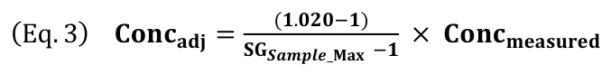
where SGSample_Max is calculated as:
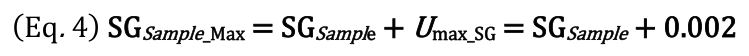
[Comment to Article 4.0-i: This adjustment of the concentration shall not be performed when SGSample > 1.018. Instead, in those situations where SGSample > 1.018, only the DL shall be adjusted (as per Article 7.0, and irrespective of whether a diuretic or masking agent is present in the Sample) and the result for the Threshold Substance shall be reported as AAF if the concentration exceeds the adjusted DL (DLadj).]
ii. After SG adjustment to 1.020, the adjusted concentration of the Analyte(s) of the Threshold Substance is higher than (>) the corresponding DL, and
iii. The diuretic or masking agent whose presence has been confirmed (as per ISL TD IDCR[5]) in the Sample is either not subject to a Minimum Reporting Level (MRL) or, where applicable, its estimated concentration is higher than (>) the corresponding MRL, in accordance with the ISL TD MRL[6]. In p. 8 those cases, since SGSample ≤ 1.018, the concentration of the diuretic or masking agent subject to an MRL shall not be adjusted.
5.0 Threshold (T) and Decision Limit (DL)
Where a T has been established for a Prohibited Substance, the DL represents the value for that Threshold Substance above which it can be decided that the result in a given Sample, obtained using a validated measurement procedure, has exceeded the T with a statistical confidence of at least 95 %, and hence that an AAF is justified. This is illustrated in Figure 1.
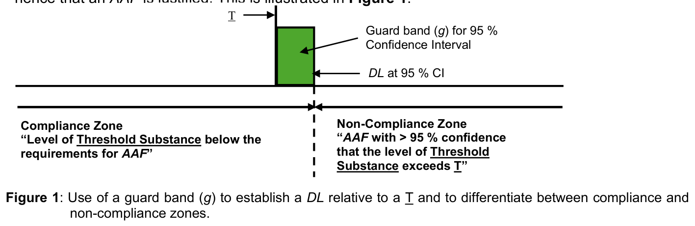
Figure 1: Use of a guard band (g) to establish a DL relative to a T and to differentiate between compliance and non-compliance zones.
The DL value shall be calculated as the sum of the T value and the guard band (g), where g is calculated based on the relevant WADA maximum acceptable value (unit/mL) of the combined standard uncertainty (uc_Max) given in Table 1, using a coverage factor k of 1.645 (95 % coverage range, one-tailed normal distribution). The resulting value of the DL is then rounded up to the second significant figure.
- (Eq.5) DL=T+g
- (Eq. 6) g = k × uc_Max, with k = 1.645
- (Eq. 7) uc_Max = T × uc Max (%)
- (Eq. 8) AAF > DL
6.0 Maximum Levels of Measurement Uncertainty
The maximum acceptable relative combined standard uncertainty (uc_Max, %) represents the minimum requirement to be met by a Laboratory for the uncertainty of the measurement, estimated at levels close to the T value, when reporting a result for the determination of a Threshold Substance. The uc_Max (%) values are set such that a Laboratory can reasonably expect to work within them when applying Quantitative Procedures for the confirmation of Threshold Substances.
In most cases, the uc_Max (%) is assigned using robust estimates of method Reproducibility (SR) obtained from the combined participant Laboratory results from relevant rounds of the External Quality
p. 9
Assessment Scheme (EQAS) - see ISL TD EQAS[15]. In cases where a new Threshold Substance is introduced into this ISL TD before EQAS performance data are available, alternative approaches will be used to assign the relevant uc_Max (%). In this case the assignment of uc_Max (%) must be reviewed and approved by the WADA Laboratory Expert Advisory Group (Lab EAG). When data obtained from subsequent EQAS rounds becomes available, the uc_Max (%) may be revised to reflect the actual analytical performance of the Laboratories.
The results obtained from the WADA EQAS indicate that these minimum requirements are conservative. When setting the target values, the degrees of freedom associated with the MU data are assumed to be large.
a) Laboratories shall estimate the relative combined standard uncertainty (uc, %) for a result at levels close to the T value for each Quantitative Procedure for Threshold Substances.
b) The estimated uc (%) shall be not greater than (≤) the uc_Max (%) value given in Table 1.
[Comment to Article 6.0 b): As mentioned above, these uc_Max (%) values are considered to be conservative; therefore, smaller uc (%) values may be reported by Laboratories.]
Various approaches to obtain Fit-for-Purpose estimates of uc (%) associated with the results from a given measurement procedure are given in Annex A.
7.0 Adjustment of the DL for a High Specific Gravity of the Sample
a) For any of the Threshold Substances subject of this ISL TD DL, when the SGSample (as measured by the Laboratory during the CP and expressed rounded to three (3) decimal places) is greater than (>) 1.018 (including in the presence of diuretics/masking agents), an adjusted DL for an individual test result (DLadj) shall be calculated as per Eq. 9 below to determine whether the finding constitutes an AAF.
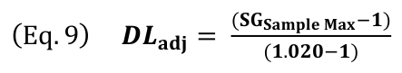
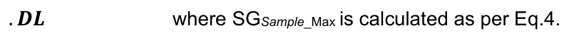
[Comment to Article 7.0 a): The SGSample cut-off value for adjustment of the DL has been set at 1.018 to account for the lower limit of the 95 % CI, based on a two-tailed normal distribution, of a reference value of SG at 1.020 for normally hydrated individuals (calculated as 1.020 - UMax_SG, where UMax_SG = 0.002, k = 2)].
b) The adjustment of the DL for the SG is not needed for "B" Sample confirmations of exogenous Threshold Substances, since in those cases, in accordance with the ISL[1], "B" Sample results shall only confirm the identification of the target Analyte(s) of the Threshold Substance for the AAF to be valid.
c) The determined DLadj shall be expressed truncated to three (3) significant figures (trailing zeros (0) shall be considered as significant figures, e.g., 1.50; 100) (see Annex B).
p. 10
8.0 Reporting Quantitative Results
The minimum information required when reporting an AAF for a Threshold Substance includes:
a) The quantitative result (reported as the mean value from triplicate determinations, truncated to three (3) significant figures; trailing zeros (0) shall be considered as significant figures, e.g., 13.0; 190).
b) A statement that the quantitative result exceeds (>) the relevant DL (or DLadj, if SG > 1.018), and
c) The uc (%) associated with a result at levels close to the T value, as determined during the Quantitative Procedure validation (which shall not be higher than (≤) the corresponding uc_Max (%) specified in Table 1).
d) Where the concentration of the Threshold Substance exceeds the Threshold value but does not exceed the (adjusted, if applicable) DL, the Laboratory shall report this result as a Negative Finding and include a recommendation (e.g., in the opinion section of the Test Report) for the RMA to consider this result for Target Testing purposes.
Reporting Example for the Test Report:
The concentration level of 'Prohibited Substance A' in the Sample is X.XX (units). This exceeds the DL (after adjustment for the SG, if applicable) for Prohibited Substance A of Y.YY (units). The relative combined standard uncertainty (uc %) estimated by the Laboratory for a result at the Threshold (Z.ZZ) is 'b' (%). This result constitutes an Adverse Analytical Finding for the presence of 'Prohibited Substance A' in the Sample.
9.0 Interpretation Examples
a) The presence of ephedrine is confirmed in a Sample with a SGSample = 1.018 at a concentration of 11.23 µg/mL using a Quantitative Procedure with a uc = 3.6% for a result at the T of 10.0 µg/mL.
This result constitutes an AAF since the concentration of ephedrine in the Sample, truncated to three (3) significant figures, is 11.2 µg/mL and exceeds the DL for ephedrine of 11.0 µg/mL. The uc of 3.6% is lower than (<) the corresponding uc_Max of 5%. Such a finding shall be reported as follows:
[Test Report: The concentration of ephedrine in the Sample is 11.2 µg/mL. This exceeds the DL for ephedrine of 11.0 µg/mL. The relative combined standard uncertainty (uc%) estimated by the Laboratory for a result at the Threshold (10.0 µg/mL) is 3.6%. This constitutes an AAF for the presence of ephedrine in the Sample.]
b) The presence of salbutamol is confirmed in a Sample with a SGSample = 1.012 at a concentration of 0.90 µg/mL using a Quantitative Procedure with a uc = 7% for a result at the T of 1.00 µg/mL. In addition, furosemide, a prohibited diuretic subject to an MRL at 20 ng/mL, is detected and confirmed in the Sample at a concentration of 55 ng/mL.
After adjusting the concentration for a SG = 1.020 as per Eq.3, this result constitutes an AAF for salbutamol, since the adjusted concentration, truncated to three (3) significant figures, is 1.29 µg/mL and exceeds the DL for salbutamol of 1.20 µg/mL. The uc of 7% is lower than (<) the corresponding uc_Max of 10%. Such a finding shall be reported as follows:
p. 11
Test Report:
The presence of furosemide was confirmed in the Sample at a concentration of 55 ng/mL, which is higher than the MRL of 20 ng/mL. This constitutes an AAF for the presence of furosemide in the Sample.
In addition, the presence of salbutamol was also confirmed in the Sample at a concentration of 0.90 µg/mL. The concentration of salbutamol adjusted for a SG = 1.020 is 1.29 µg/mL, which exceeds the DL of 1.20 µg/mL. The relative combined standard uncertainty (uc%) estimated by the Laboratory for a result at the Threshold (1.00 µg/mL) is 7%. This constitutes an AAF for the presence of salbutamol in the co-presence of a diuretic in the Sample.
c) The presence of Carboxy-THC is confirmed in a Sample with a SGSample = 1.022 at a concentration of 216.7 ng/mL using a Quantitative Procedure with a uc = 9% for a result at the T of 150 ng/mL. The DLadj calculated according to Eq. 9 and expressed to three (3) significant figures is 216 ng/mL (see Annex B).
This result does not constitute an AAF, since the concentration of carboxy-THC in the Sample, truncated to three (3) significant figures, is 216 ng/mL and does not exceed the DLadj for carboxy-THC of 216 ng/mL.
Test Report:
Since the concentration of carboxy-THC exceeds the Threshold value but does not exceed the adjusted DL, the Laboratory shall report this result as a Negative Finding and include a recommendation (e.g., in the opinion section of the Test Report) for the RMA to consider this result for Target Testing purposes.
[Comment to Article 9.0 c): When the result for a Threshold Substance in a Sample scantily exceeds the DL, the 95% confidence interval [mean ± expanded uncertainty U95% (k = 2)] of the Laboratory result may extend below the DL. It is important to note that this shall not invalidate an AAF. For appropriate statistical comparison, the uc with a single-tailed distribution coverage factor (k = 1.645) is taken into consideration when the Laboratory result is compared to the T to demonstrate that the result obtained for the Threshold Substance exceeds the T at greater than (>) 95 % confidence.]
p. 12
ANNEX A - Estimation and Verification of Measurement Uncertainty
1 Estimating Measurement Uncertainty (MU)
The International Vocabulary of Metrology (JCGM-200:2012)[16] formally defines MU as a parameter characterizing the dispersion of quantity values attributed to a measurand.
More simply stated, the combined standard MU of a result [uc(y)] is equivalent to an estimate of the standard deviation (SD) associated with the result (y) that would have been obtained if the measurement of the sample under analysis had been repeated several times with all influence quantities perturbed in line with their associated uncertainties. Multiplication of uc(y) by a coverage factor (k) gives the expanded MU (U) associated with result (y). For a given sample, the combination of the result (y) and its associated U determines a range representing the dispersion of the values that can reasonably be attributed to the measurand at a stated level of statistical confidence. For Doping Control purposes, a value of U corresponding to a 95 % coverage interval is applied.
Accreditation to ISO/IEC 17025[17], as well as compliance with the ISL[1], requires that Laboratories evaluate the MU associated with their results at levels close to the Threshold (T), and report the uncertainty where applicable. The JCGM Guide to the Expression of Uncertainty in Measurement (GUM) establishes general rules for evaluating and expressing uncertainty in measurement that are applicable to ISO/IEC 17025 accredited laboratories[18].
To evaluate the MU of a measurement procedure, the Laboratory may use any approach consistent with the GUM. Such approaches include "bottom-up" methods (referred to elsewhere as the "analytical" or "modelling" method) as well as "top-down" or "empirical" methods that use data derived from intraor inter-laboratory method validation studies, internal quality control procedures or from proficiency testing schemes (such as the WADA EQAS). Various references are available which give worked examples of both the "bottom-up" and "top-down" approaches to MU estimation[19-25].
Different approaches may be applied for the estimation of the combined standard measurement uncertainty uc(y) associated with an individual result (y). They use:
A. A modelling approach based on the principles described in the GUM.
B. Intra-laboratory approach: "In-house" method validation data combined with quality control data.
C. Inter-laboratory approach: Data derived from inter-laboratory collaborative trials or from EQAS.
All of these approaches are considered acceptable. Any of these approaches may be employed by a Laboratory to estimate the MU associated with their measurement results, provided the Laboratory estimate does not exceed the maximum acceptable (target) MU associated with the determination of specific Threshold Substances that have been established by WADA. The strategy used for uncertainty estimation does not have to follow one exclusive model and in practice the combination of data obtained from two or more different approaches can be employed.
p. 13
However, for Doping Control purposes, a 'top-down' approach, based on the determination of the following method performance characteristics, is the recommended procedure:
a) Repeatability (sᵣ) and Intermediate Precision (sw, also referred to as the within-Laboratory reproducibility or imprecision) from within-Laboratory QC and/or validation data, and
b) Bias (B) from either QC/validation data, for example, when there is an available Certified Reference Material (CRM), or from WADA EQAS data.
A. Intra-Laboratory Data Approach
This approach assumes that the Quantitative Procedure has undergone intra-Laboratory validation including an estimation of the sw and B. It is based on a three (3)-component measurement model:
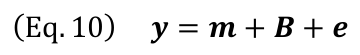
The result (y) is the sum, under Intermediate Precision conditions, of the measurement method mean (m), a systematic error contribution (method bias, B) and a random error contribution (e). The uc(y) associated with the result is given by:
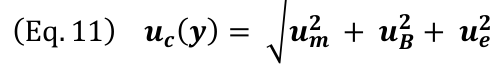
The estimate of within-Laboratory Intermediate Precision of results, usually obtained from intra-Laboratory QC and method validation data, can be expressed as a standard deviation (sw). It provides a Fit-for-Purpose estimate of the uncertainty contributions related to random errors (ue) and the mean values (uₘ). Consequently, Eq. 10 can be simplified by including this sw component and the uncertainty associated with the estimate of B (uB), as determined during method validation:
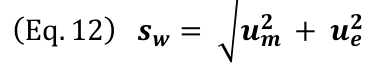
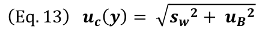
When (y) is the average of n replicate analyses:
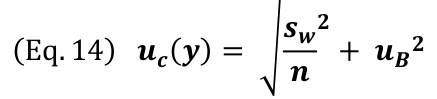
p. 14
The uncertainty associated with B (uB) can be estimated by using the following equations:
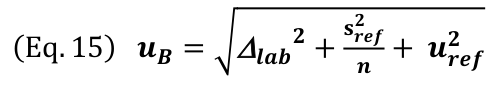
where:
∆lab - Difference between the Laboratory's measurement result (ylab) and the quantity value of the reference sample.
n - Number of replicate measurements of the reference sample (e.g., CRM, QC or EQAS sample).
sref - Standard Deviation (SD) under Repeatability conditions of the results obtained for the replicate measurements of the reference sample.
uref - Combined standard uncertainty associated with the quantity value of the reference sample.
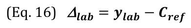
where:
ylab - Laboratory measurement result
Cref - Concentration of the reference sample
Where information is available from nB separate determinations of B, then the uB shall be expressed as the root mean square of the Bias (RMSB).
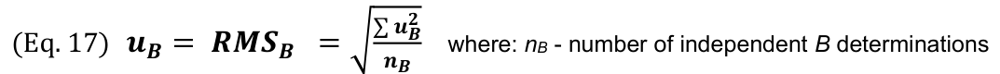
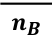
B. Inter-Laboratory Method Performance or EQAS Approach
Where a Laboratory has participated in an inter-Laboratory comparison or EQAS to evaluate a Quantitative Procedure, the inter-Laboratory Reproducibility of the method (sR), i.e., the SD of the Participants' results calculated after exclusion of outliers or from robust statistics, can be used as an estimate of the uc of an individual result obtained using the method:
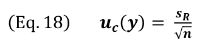
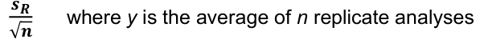
[Comment 1 to Article A-1B: The major sources of variability can be assessed by inter-Laboratory studies and provide estimates of Repeatability (sr), Reproducibility (sR) and Bias (B) of the Test Method (with respect to a known reference value). The sR can be used as an estimate of the uc associated with an individual measurement result obtained using this Quantitative Procedure.]
This estimate is only valid when:
a) The intra-Laboratory sᵣ is smaller than (<) the variation of the Participants' results (sᵣ < sR).
p. 15
b) The target values of the study (including any sample dilution needed to fit the instrument measurement capacity) fall within the range of application of the Quantitative Procedure.
c) The Laboratory obtains satisfactory results in a minimum number (2) of consecutive EQAS rounds.
[Comment 2 to Article A-1B: As noted before, the sR estimate can be used as a conservative estimate of the uc associated with a result. Moreover, a Laboratory can, by its participation in the WADA EQAS, verify and demonstrate the validity of its chosen approach to estimate the MU.]
The tools currently used to assess the quantitative EQAS results provide the estimate of uB for each participating Laboratory along with the consensus values. This offers an estimate of uB that can be used in the estimation of the uc. The uB values estimated for each Laboratory in each EQAS round can be combined with sw using Eq. 13. If multiple values of uB are used, regardless of whether they arise from EQAS results and/or internal estimates, they can be combined using Eq. 17 before being included in Eq. 13.
2 Verification of Measurement Uncertainty
Regardless of the approach employed by a Laboratory to estimate the MU for the results it obtains using a particular Quantitative Procedure, it is important that this MU estimate be validated, and its veracity continuously monitored. This can be accomplished by regular comparison with an appropriate QC sample, preferably a CRM (if available) and/or through evaluation of method performance using EQAS data.
The tools currently used to assess the quantitative EQAS results provide an estimate of MU for each participating Laboratory, u(ylab), along with its expanded uncertainty, U₉₅(ylab). The estimate u(ylab) is realistic when u(ylab) is between u(xPT) and SR (robust reproducibility standard deviation of all Participant's results) and is non-compliant when u(ylab) - U95%(u(ylab)) > uc_Max.
The MU for a particular Quantitative Procedure, estimated by a Laboratory can also be checked by comparison to data generated from an appropriate EQAS by employing the normalized error (Eₙ).
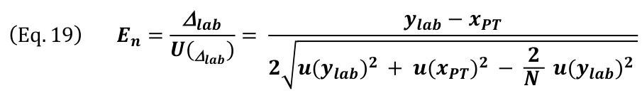
where:
∆lab - Difference between the Laboratory's measurement result and the consensus value (assigned value for proficiency testing).
U(∆lab) - Expanded uncertainty (95%, k = 2) of the difference.
ylab - Laboratory measurement result.
xPT - Assigned proficiency testing value for the EQAS study.
u(yLab) - Combined standard uncertainty of the Laboratory's measurement result (ylab).
u(xPT) - Combined standard uncertainty of the consensus value.
N - Number of Participants.
p. 16
Monitoring the ABS(Eₙ) values over time provides the Laboratory with a tool to evaluate the agreement between its uc estimation and the actual performance of the Quantitative Procedure. Provided that the estimated uc is less than or equal to (≤) the uc_Max required by WADA, it is considered that when ABS(Eₙ) is distributed:
a) Around one (1): the estimated uc is in good agreement with the Laboratory's EQAS performance.
b) Repeatedly at levels considerably smaller than (<<) one (1): the uc could be overestimated. This shows that the historical Laboratory performance in the EQAS compared to the inter-Laboratory consensus values is better than its estimated uc. The Laboratory should evaluate the need for reassessing the uc for this Quantitative Procedure.
c) Repeatedly greater than (>) one (1): the uc could be underestimated as the Laboratory's performance in the EQAS is worse than its estimated uc. In this case the reason for the high Eₙ value should be re-assessed. If necessary, steps should be taken to re-evaluate the uc.
It is important to highlight that individual ABS(Eₙ) values greater than (>) or lower than (<) one (1) may not necessarily justify actions to be taken by the Laboratory. Rather, the history of values and their trends should be monitored.
Whenever there is a change in the Quantitative Procedure (extraction step, derivatization conditions, internal standard, etc.), a re-validation of the procedure and a re-assessment of the MU of results obtained using the altered procedure is required. It is necessary to check that the Quantitative Procedure is still Fit-for-Purpose (e.g., the uc estimated by the Laboratory for a particular Quantitative Procedure is below the acceptable uc_Max given in Table 1 above).
p. 17
ANNEX B - Adjusted Decision Limits
Table 2. Adjusted DLs calculated for SG > 1.018 as per Eq. 9 and expressed truncated to three (3) significant figures.
| SG | SG_Max | Cobalt | Formoterol | Salbutamol | Cathine | Ephedrine | Methylephedrine | PSE | M | C-THC |
|---|---|---|---|---|---|---|---|---|---|---|
| 1.018 | 1.020 | 80.0 | 50.0 | 1.20 | 6.00 | 11.0 | 11.0 | 170 | 1.30 | 180 |
| 1.019 | 1.021 | 84.0 | 52.5 | 1.26 | 6.30 | 11.5 | 11.5 | 178 | 1.36 | 189 |
| 1.020 | 1.022 | 88.0 | 55.0 | 1.32 | 6.60 | 12.1 | 12.1 | 187 | 1.43 | 198 |
| 1.021 | 1.023 | 92.0 | 57.5 | 1.38 | 6.90 | 12.6 | 12.6 | 195 | 1.49 | 207 |
| 1.022 | 1.024 | 96.0 | 60.0 | 1.44 | 7.20 | 13.2 | 13.2 | 204 | 1.56 | 216 |
| 1.023 | 1.025 | 100 | 62.5 | 1.50 | 7.50 | 13.7 | 13.7 | 212 | 1.62 | 225 |
| 1.024 | 1.026 | 104 | 65.0 | 1.56 | 7.80 | 14.3 | 14.3 | 221 | 1.69 | 234 |
| 1.025 | 1.027 | 108 | 67.5 | 1.62 | 8.10 | 14.8 | 14.8 | 229 | 1.75 | 243 |
| 1.026 | 1.028 | 112 | 70.0 | 1.68 | 8.40 | 15.4 | 15.4 | 238 | 1.82 | 252 |
| 1.027 | 1.029 | 116 | 72.5 | 1.74 | 8.70 | 15.9 | 15.9 | 246 | 1.88 | 261 |
| 1.028 | 1.03 | 120 | 75.0 | 1.80 | 9.00 | 16.5 | 16.5 | 255 | 1.95 | 270 |
| 1.029 | 1.031 | 124 | 77.5 | 1.86 | 9.30 | 17.0 | 17.0 | 263 | 2.01 | 279 |
| 1.030 | 1.032 | 128 | 80.0 | 1.92 | 9.60 | 17.6 | 17.6 | 272 | 2.08 | 288 |
| 1.031 | 1.033 | 132 | 82.5 | 1.98 | 9.90 | 18.1 | 18.1 | 280 | 2.14 | 297 |
| 1.032 | 1.034 | 136 | 85.0 | 2.04 | 10.2 | 18.7 | 18.7 | 289 | 2.21 | 306 |
| 1.033 | 1.035 | 140 | 87.5 | 2.10 | 10.5 | 19.2 | 19.2 | 297 | 2.27 | 315 |
| 1.034 | 1.036 | 144 | 90.0 | 2.16 | 10.8 | 19.8 | 19.8 | 306 | 2.34 | 324 |
| 1.035 | 1.037 | 148 | 92.5 | 2.22 | 11.1 | 20.3 | 20.3 | 314 | 2.40 | 333 |
| 1.036 | 1.038 | 152 | 95.0 | 2.28 | 11.4 | 20.9 | 20.9 | 323 | 2.47 | 342 |
| 1.037 | 1.039 | 156 | 97.5 | 2.34 | 11.7 | 21.4 | 21.4 | 331 | 2.53 | 351 |
| 1.038 | 1.04 | 160 | 100 | 2.40 | 12.0 | 22.0 | 22.0 | 340 | 2.60 | 360 |
| 1.039 | 1.041 | 164 | 102 | 2.46 | 12.3 | 22.5 | 22.5 | 348 | 2.66 | 369 |
| 1.040 | 1.042 | 168 | 105 | 2.52 | 12.6 | 23.1 | 23.1 | 357 | 2.73 | 378 |
p. 18
10.0 References
[1] World Anti-Doping Code International Standard for Laboratories (ISL).
[2] WADA Technical Document ISL TD CG/LH: Reporting and Management of Urinary Chorionic Gonadotrophin (hCG) and Luteinizing Hormone (LH) Findings in Male Athletes.
[3] WADA Technical Document ISL TD GH: Human Growth Hormone (hGH) Isoform Differential Immunoassays for Doping Control Analyses.
[4] WADA Technical Document ISL TD VAL - Minimum Requirements for Validation of Analytical Testing Procedures for Doping Control.
[5] WADA Technical Document ISL TD IDCR: Minimum Criteria for Chromatographic-Mass Spectrometric Confirmation of the Identity of Analytes for Doping Control Purposes.
[6] WADA Technical Document ISL TD MRL: Minimum Reporting Levels applied in Doping Control.
[7] Knoop A, et al. Analysis of cobalt for human sports drug testing purposes using ICP- and LC-ICP-MS. Drug Test Anal 12(11-12): 1666-1672, 2020
[8] WADA Technical Document ISL TD ATP: Analytical Testing Procedures.
[9] Delbeke F.T., and Michel Debackere. Urinary concentrations of codeine and morphine after the administration of different codeine preparations in relation to doping analysis. J. Pharm. Biomed. Anal. 9(10-12): 959-964, 1991
[10] Seif-Barghi, T et al. Morphine/codeine ratio, a key in investigating a case of doping. Asian J. Sports Med. 6(4), e28798, 2015.
[11] Ripel, Å. et al. Morphine formation after intake of ethylmorphine. Pharmacol Toxicol 70(3): 228-229, 1992.
[12] Aasmundstad, T. A. et al. Biotransformation and pharmacokinetics of ethylmorphine after a single oral dose. Br. J. Clin. Pharmacol. 39(6): 611-620, 1995.
[13] Rane, A., Modiri A. R., and Gerdin E. Ethylmorphine O-deethylation cosegregates with the debrisoquin genetic metabolic polymorphism. Clin. Pharmacol. Ther. 52(3): 257-264, 1992.
[14] Popa, C., Beck, O., and Brodin, K. Morphine formation from ethylmorphine: Implications for drugs-of-abuse testing in urine. J. Anal. Toxicol. 22(2): 142-147, 1998.
[15] WADA Technical Document ISL TD EQAS - External Quality Assessment Scheme
[16] JCGM 200:2012. International Vocabulary of Metrology - Basic and General Concepts and Associated Terms (VIM), 3rd edition (2012). https://doi.org/10.59161/JCGM200-2012
[17] ISO/IEC 17025:2017. General Requirements for the competence of testing and calibration laboratories (2017). https://www.iso.org/standard/66912.html
[18] JCGM 100:2008. Evaluation of measurement data - Guide to the expression of uncertainty in measurement (2008).
https://doi.org/10.59161/JCGM100-2008E
[19] JCGM GUM-1:2023. Guide to the expression of uncertainty in measurement - Part 1: Introduction (2023). https://doi.org/10.59161/JCGMGUM-1-2023
p. 19
[20] Eurolab Technical Report No. 1/2007. Measurement Uncertainty revisited: Alternative approaches to uncertainty evaluation (2007).
https://www.eurolab.org/pubs-techreports
[21] NORDTEST Technical Report 537. Handbook for calculation of measurement uncertainty in environmental laboratories (2012).
https://www.nordtest.info/images/documents/nt-technicalreports/nt_tr_537_ed3_1_English_HandbookforCalculationofMeasurementuncertaintyinenvironmentallaborat ories.pdf
[22] EURACHEM/CITAC Guide CG 4: Quantifying Uncertainty in Analytical Measurement 3rd ed. Ellison, S.L.R. and Williams, A. (Eds) (2012).
https://www.eurachem.org/images/stories/Guides/pdf/QUAM2012_P1.pdf
[23] ISO 11352:2025, Water quality - Estimation of measurement uncertainty based on validation and quality control data https://www.iso.org/standard/50399.html
[24] ISO 21748:2017, Guidance for the use of repeatability, reproducibility and trueness estimates in measurement uncertainty evaluation https://www.iso.org/standard/71615.html
[25] Possolo, A, et al. A brief guide to measurement uncertainty (IUPAC Technical Report). Pure Appl. Chem. 96(1): 113-134, 2024 https://doi.org/10.1515/pac-2022-1203
[Current versions of WADA's ISL, Technical Documents and Technical Letters may be found at https://www.wada-ama.org/en/what-we-do/international-standards]
Retrieved on 26 November 2026 from https://www.wada-ama.org/sites/default/files/2026-03/td2027dl_v1.0_eng.pdf